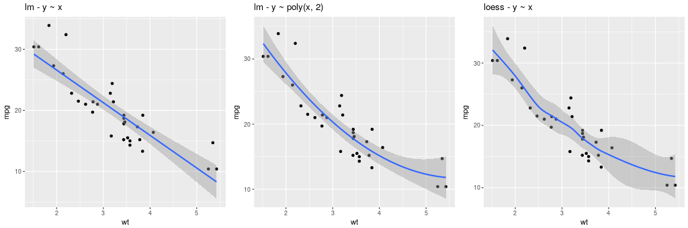

Graphics¶
Introduction¶
This section shows how to make R graphics from rpy2, using some of the different graphics systems available to R users.
The purpose of this section is to get users going, and be able to figure out by reading the R documentation how to perform the same plot in rpy2.
Graphical devices¶
With R, all graphics are plotted into a so-called graphical device. Graphical devices can be interactive, like for example X11, or non-interactive, like png or pdf. Non-interactive devices appear to be files. It is possible to create custom graphical devices from Python/rpy2, but this an advanced topic (see Custom graphical devices).
By default an interactive R session will open an interactive device when needing one. If a non-interactive graphical device is needed, one will have to specify it.
Note
Do not forget to close a non-interactive device when done. This can be required to flush pending data from the buffer.
The module grdevices aims at representing the R package
grDevices*. Example with the R functions png and dev.off:
from rpy2.robjects.packages import importr
grdevices = importr('grDevices')
grdevices.png(file="path/to/file.png", width=512, height=512)
# plotting code here
grdevices.dev_off()
The package contains an Environment grdevices_env that
can be used to access an object known to belong to that R packages, e.g.:
>>> palette = grdevices.palette()
>>> print(palette)
[1] "black" "red" "green3" "blue" "cyan" "magenta" "yellow"
[8] "gray"
Getting ready¶
To run examples in this section we first import
rpy2.robjects and define few helper
functions.
from rpy2 import robjects
from rpy2.robjects import Formula, Environment
from rpy2.robjects.vectors import IntVector, FloatVector
from rpy2.robjects.lib import grid
from rpy2.robjects.packages import importr, data
from rpy2.rinterface import RRuntimeError
import warnings
# The R 'print' function
rprint = robjects.globalenv.get("print")
stats = importr('stats')
grdevices = importr('grDevices')
base = importr('base')
datasets = importr('datasets')
grid.activate()
Package lattice¶
Introduction¶
Importing the package lattice is done the same as it is done for other R packages.
lattice = importr('lattice')
Scatter plot¶
We use the dataset mtcars, and will use the lattice function xyplot to make scatter plots.
xyplot = lattice.xyplot
Lattice is working with formulae (see Formulae), therefore we build one and store values in its environment. Making a plot is then a matter of calling the function xyplot with the formula as as an argument.
datasets = importr('datasets')
mtcars = data(datasets).fetch('mtcars')['mtcars']
formula = Formula('mpg ~ wt')
formula.getenvironment()['mpg'] = mtcars.rx2('mpg')
formula.getenvironment()['wt'] = mtcars.rx2('wt')
p = lattice.xyplot(formula)
rprint(p)
{kind=link}
The display of group information can be done simply by using the named parameter groups. This will indicate the different groups by color-coding.
p = lattice.xyplot(formula, groups = mtcars.rx2('cyl'))
rprint(p)
{kind=link}
An alternative to color-coding is to have points is different panels. In lattice, this done by specifying it in the formula.
formula = Formula('mpg ~ wt | cyl')
formula.getenvironment()['mpg'] = mtcars.rx2('mpg')
formula.getenvironment()['wt'] = mtcars.rx2('wt')
formula.getenvironment()['cyl'] = mtcars.rx2('cyl')
p = lattice.xyplot(formula, layout = IntVector((3, 1)))
rprint(p)
{kind=link}
Box plot¶
p = lattice.bwplot(Formula('mpg ~ factor(cyl) | gear'),
data = mtcars, fill = 'grey')
rprint(p, nrow=1)
{kind=link}
Other plots¶
The R package lattice contains a number of other plots, which unfortunately cannot all be detailled here.
tmpenv = data(datasets).fetch("volcano")
volcano = tmpenv["volcano"]
p = lattice.wireframe(volcano, shade = True,
zlab = "",
aspect = FloatVector((61.0/87, 0.4)),
light_source = IntVector((10,0,10)))
rprint(p)
{kind=link}
Splitting the information into different panels can also be specified in the formula. Here we show an artifial example where the split is made according to the values plotted on the Z axis.
reshape2 = importr('reshape2')
dataf = reshape2.melt(volcano)
dataf = dataf.cbind(ct = lattice.equal_count(dataf.rx2("value"), number=3, overlap=1/4))
p = lattice.wireframe(Formula('value ~ Var1 * Var2 | ct'),
data = dataf, shade = True,
aspect = FloatVector((61.0/87, 0.4)),
light_source = IntVector((10,0,10)))
rprint(p, nrow = 1)
{kind=link}
Package ggplot2¶
Introduction¶
The R package ggplot2 implements the Grammar of Graphics. While more documentation on the package and its usage with R can be found on the ggplot2 website, this section will introduce the basic concepts required to build plots. Obviously, the R package ggplot2 is expected to be installed in the R used from rpy2.
The package is using the grid lower-level plotting infrastructure, that can be accessed
through the module rpy2.robjects.lib.grid. Whenever separate plots on the same device,
or arbitrary graphical elements overlaid, or significant plot customization, or editing,
are needed some knowledge of grid will be required.
Here again, having data in a DataFrame is expected
(see DataFrame for more information on such objects).
import math, datetime
import rpy2.robjects.lib.ggplot2 as ggplot2
import rpy2.robjects as ro
from rpy2.robjects.packages import importr
base = importr('base')
mtcars = data(datasets).fetch('mtcars')['mtcars']
rnorm = stats.rnorm
dataf_rnorm = robjects.DataFrame({'value': rnorm(300, mean=0) + rnorm(100, mean=3),
'other_value': rnorm(300, mean=0) + rnorm(100, mean=3),
'mean': IntVector([0, ]*300 + [3, ] * 100)})
Plot¶
gp = ggplot2.ggplot(mtcars)
pp = gp + \
ggplot2.aes_string(x='wt', y='mpg') + \
ggplot2.geom_point()
pp.plot()
{kind=link}
Aesthethics mapping¶
An important concept for the grammar of graphics is the mapping of variables, or columns in a data frame, to graphical representations.
Like it was shown for lattice, a third variable can be represented
on the same plot using color encoding, and this is now done by
specifying that as a mapping (the parameter col when calling
the constructor for the AesString).
gp = ggplot2.ggplot(mtcars)
pp = gp + \
ggplot2.aes_string(x='wt', y='mpg', col='factor(cyl)') + \
ggplot2.geom_point()
pp.plot()
{kind=link}
The size of the graphical symbols plotted (here circular dots) can also be mapped to a variable:
pp = gp + \
ggplot2.aes_string(x='wt', y='mpg', size='factor(carb)',
col='factor(cyl)', shape='factor(gear)') + \
ggplot2.geom_point()
pp.plot()
{kind=link}
Geometry¶
The geometry is how the data are represented. So far we used a scatter plot of points, but there are other ways to represent our data.
Looking at the distribution of univariate data can be achieved with an histogram:
gp = ggplot2.ggplot(mtcars)
pp = gp + \
ggplot2.aes_string(x='wt') + \
ggplot2.geom_histogram()
#pp.plot()
{kind=link}
gp = ggplot2.ggplot(mtcars)
pp = gp + \
ggplot2.aes_string(x='wt', fill='factor(cyl)') + \
ggplot2.geom_histogram()
pp.plot()
{kind=link}
Barplot-based representations of several densities on the same
figure can often be lacking clarity and line-based representation,
either geom_freqpoly() (representation of the frequency as broken
lines) or geom_density() (plot a density estimate),
can be in better.
pp = gp + \
ggplot2.aes_string(x='value', fill='factor(mean)') + \
ggplot2.geom_density(alpha = 0.5)
{kind=link}
Whenever a large number of points are present, it can become interesting to represent the density of “dots” on the scatterplot.
With 2D bins:
gp = ggplot2.ggplot(dataf_rnorm)
pp = gp + \
ggplot2.aes_string(x='value', y='other_value') + \
ggplot2.geom_bin2d() + \
ggplot2.ggtitle('geom_bin2d')
pp.plot(vp = vp)
With a kernel density estimate:
gp = ggplot2.ggplot(dataf_rnorm)
pp = gp + \
ggplot2.aes_string(x='value', y='other_value') + \
ggplot2.geom_density2d() + \
ggplot2.ggtitle('geom_density2d')
pp.plot(vp = vp)
With hexagonal bins:
gp = ggplot2.ggplot(dataf_rnorm)
pp = gp + \
ggplot2.aes_string(x='value', y='other_value') + \
ggplot2.geom_hex() + \
ggplot2.ggtitle('geom_hex')
pp.plot(vp = vp)
{kind=link}
Box plot:
gp = ggplot2.ggplot(mtcars)
pp = gp + \
ggplot2.aes_string(x='factor(cyl)', y='mpg') + \
ggplot2.geom_boxplot()
pp.plot()
{kind=link}
Boxplots can be used to represent a summary of the data with an emphasis on location and spread.
gp = ggplot2.ggplot(mtcars)
pp = gp + \
ggplot2.aes_string(x='factor(cyl)', y='mpg', fill='factor(cyl)') + \
ggplot2.geom_boxplot()
pp.plot()
{kind=link}
Models fitted to the data are also easy to add to a plot:
pp = gp + \
ggplot2.aes_string(x='wt', y='mpg') + \
ggplot2.geom_point() + \
ggplot2.stat_smooth(method = 'lm')
pp.plot()
{kind=link}
The method can be one of {glm, gam, loess, rlm}, and formula can be specified to declared the fitting (see example below).
{kind=link}
The constructor for GeomSmooth also accepts a parameter
groupr that indicates if the fit should be done according to groups.
pp = gp + \
ggplot2.aes_string(x='wt', y='mpg') + \
ggplot2.geom_point() + \
ggplot2.geom_smooth(ggplot2.aes_string(group = 'cyl'),
method = 'lm')
pp.plot()
{kind=link}
Encoding the information in the column cyl is again
only a matter of specifying it in the AesString mapping.
pp = ggplot2.ggplot(mtcars) + \
ggplot2.aes_string(x='wt', y='mpg', col='factor(cyl)') + \
ggplot2.geom_point() + \
ggplot2.geom_smooth(ggplot2.aes_string(group = 'cyl'),
method = 'lm')
pp.plot()
{kind=link}
As can already be observed in the examples with GeomSmooth,
several geometry objects can be added on the top of each other
in order to create the final plot. For example, a marginal rug
can be added to the axis of a regular scatterplot:
gp = ggplot2.ggplot(mtcars)
pp = gp + \
ggplot2.aes_string(x='wt', y='mpg') + \
ggplot2.geom_point() + \
ggplot2.geom_rug()
pp.plot()
{kind=link}
gp = ggplot2.ggplot(dataf_rnorm)
pp = gp + \
ggplot2.aes_string(x='value', y='other_value') + \
ggplot2.geom_point(alpha = 0.3) + \
ggplot2.geom_density2d(ggplot2.aes_string(col = '..level..')) + \
ggplot2.ggtitle('point + density')
pp.plot()
{kind=link}
Polygons can be used for maps, as shown in the relatively artificial example below:
map = importr('maps')
fr = ggplot2.map_data('france')
# add a column indicating which region names have an "o".
fr = fr.cbind(fr, has_o = base.grepl('o', fr.rx2("region"),
ignore_case = True))
p = ggplot2.ggplot(fr) + \
ggplot2.geom_polygon(ggplot2.aes_string(x = 'long', y = 'lat',
group = 'group', fill = 'has_o'),
col="black")
p.plot()
{kind=link}
Axes¶
Axes can be transformed and configured in various ways.
A common transformation is the log-transform of the coordinates.
from rpy2.robjects.lib import grid
grid.newpage()
grid.viewport(layout=grid.layout(2, 3)).push()
ggplot2_rpack = importr('ggplot2')
diamonds = ggplot2_rpack.__rdata__.fetch('diamonds')['diamonds']
gp = ggplot2.ggplot(diamonds)
for col_i, trans in enumerate(("identity", "log2", "sqrt")):
# fetch viewport at position col_i+1 on the first row
vp = grid.viewport(**{'layout.pos.col':col_i+1, 'layout.pos.row': 1})
pp = gp + \
ggplot2.aes_string(x='carat', y='price') + \
ggplot2.geom_point(alpha = 0.1, size = 1) + \
ggplot2.coord_trans(x = trans, y = trans) + \
ggplot2.ggtitle("%s on axis" % trans)
# plot into the viewport
pp.plot(vp = vp)
# fetch viewport at position col_i+1 on the second row
vp = grid.viewport(**{'layout.pos.col':col_i+1, 'layout.pos.row': 2})
pp = gp + \
ggplot2.aes_string(x='%s(carat)' % trans, y='%s(price)' % trans) + \
ggplot2.geom_point(alpha = 0.1, size = 1) + \
ggplot2.ggtitle("%s(<variable>)" % trans)
pp.plot(vp = vp)
{kind=link}
Note
The red square is an example of adding graphical elements to a ggplot2 figure.
vp = grid.viewport(**{'layout.pos.col':2, 'layout.pos.row': 1})
grid.rect(x = grid.unit(0.7, "npc"),
y = grid.unit(0.2, "npc"),
width = grid.unit(0.1, "npc"),
height = grid.unit(0.1, "npc"),
gp = grid.gpar(fill = "red"),
vp = vp).draw()
Facets¶
Splitting the data into panels, in a similar fashion to what we did with lattice, is now a matter of adding facets. A central concept to ggplot2 is that plot are made of added graphical elements, and adding specifications such as “I want my data to be split in panel” is then a matter of adding that information to an existing plot.
For example, splitting the plots on the data in column cyl
is still simply done by adding a FacetGrid.
pp = gp + \
ggplot2.aes_string(x='wt', y='mpg') + \
ggplot2.geom_point() + \
ggplot2.facet_grid(ro.Formula('. ~ cyl')) + \
ggplot2.geom_smooth(ggplot2.aes_string(group="cyl"),
method = "lm",
data = mtcars)
pp.plot()
{kind=link}
The way data are represented (the geometry in the terminology used the grammar of graphics) are still specified the usual way.
pp = gp + \
ggplot2.aes_string(x='wt') + \
ggplot2.geom_histogram(binwidth=2) + \
ggplot2.facet_grid(ro.Formula('. ~ cyl'))
pp.plot()
{kind=link}
pp = gp + \
ggplot2.aes_string(x='wt', y='mpg') + \
ggplot2.geom_point() + \
ggplot2.geom_abline(intercept = 30)
pp.plot()
{kind=link}
pp = gp + \
ggplot2.aes_string(x='wt', y='mpg') + \
ggplot2.geom_point() + \
ggplot2.geom_abline(intercept = 30) + \
ggplot2.geom_abline(intercept = 15)
pp.plot()
{kind=link}
pp = gp + \
ggplot2.aes_string(x='wt', y='mpg') + \
ggplot2.geom_point() + \
ggplot2.stat_smooth(method = 'lm', fill = 'blue',
color = 'red', size = 3)
pp.plot()
{kind=link}
pp = gp + \
ggplot2.aes_string(x='wt', y='mpg') + \
ggplot2.geom_point() + \
ggplot2.stat_smooth(method = 'lm', fill = 'blue',
color = 'red', size = 3)
pp.plot()
Wrapper for the popular R library ggplot2.
With rpy2, the most convenient general way to import packages is to use importr(), for example with ggplot2:
from rpy2.robjects.packages import importr
ggplot2 = importr('ggplot2')
This module is an supplementary layer in which an attempt at modelling the package as it was really developed as Python package is made. Behind the scene, importr() is used and can be accessed with:
from robjects.robjects.lib import ggplot2 ggplot2.ggplot2
GGplot2 is designed using a prototype-based approach to Object-Oriented Programming, and this module is trying to define class-hierachies so the nature of a given instance can be identified more easily.
The main families of classes are:
- GGplot
- Aes and AesString
- Layer
- Stat
A downside of the approach is that the code in the module is ‘hand-made’. In hindsight, this can be tedious to maintain and document but this is a good showcase of “manual” mapping of R code into Python classes.
The codebase in R for ggplot2 has evolved since this was initially written, and many functions have signature-defined parameters (used to be ellipsis about everywhere). Metaprogramming will hopefully be added to shorten the Python code in the module, and provide a more dynamic mapping.
-
class
rpy2.robjects.lib.ggplot2.Aes(o)[source]¶ Aesthetics mapping, using expressions rather than string (this is the most common form when using the package in R - it might be easier to use AesString when working in Python using rpy2 - see class AesString in this Python module).
-
class
rpy2.robjects.lib.ggplot2.AesString(o)[source]¶ Aesthetics mapping, using strings rather than expressions (the later being most common form when using the package in R - see class Aes in this Python module).
This associates dimensions in the data sets (columns in the DataFrame), possibly with a transformation applied on-the-fly (e.g., “log(value)”, or “cost / benefits”) to graphical “dimensions” in a chosen graphical representation (e.g., x-axis, color of points, size, etc…).
Not all graphical representations have all dimensions. Refer to the documentation of ggplot2, online tutorials, or Hadley’s book for more details.
-
class
rpy2.robjects.lib.ggplot2.CoordFixed[source]¶ Cartesian coordinates with fixed relationship (that is fixed ratio between units in axes). CoordEquel seems to be identical to this class.
-
class
rpy2.robjects.lib.ggplot2.CoordTrans[source]¶ Apply transformations (functions) to a cartesian coordinate system.
-
class
rpy2.robjects.lib.ggplot2.GGPlot[source]¶ A Grammar of Graphics Plot.
GGPlot instances can be added to one an other in order to construct the final plot (the method __add__() is implemented).
-
class
rpy2.robjects.lib.ggplot2.Layer[source]¶ At this level, aesthetics mapping can (should ?) be specified (see Aes and AesString).
-
class
rpy2.robjects.lib.ggplot2.Stat[source]¶ A “statistical” processing of the data in order to make a plot, or a plot element.
This is an abstract class; material classes are called Stat* (e.g., StatAbline, StatBin, etc…).
-
class
rpy2.robjects.lib.ggplot2.StatSummary[source]¶ Summarize values for y at every unique value for x
Package grid¶
The grid package is the underlying plotting environment for lattice and ggplot2 figures. In few words, it consists in pushing and poping systems of coordinates (viewports) into a stack, and plotting graphical elements into them. The system can be thought of as a scene graph, with each viewport a node in the graph.
>>> from rpy2.robjects.lib import grid
Getting a new page is achieved by calling the function grid.newpage().
Calling layout() will create a layout, e.g. create a layout with one row
and 3 columns:
>>> lt = grid.layout(1, 3)
That layout can be used to construct a viewport:
>>> vp = grid.viewport(layout = lt)
The created viewport corresponds to a graphical entity.
Pushing into the current viewport, can be done by using the class method
grid.Viewport.push():
>>> vp.push()
Example:
grid.newpage()
# create a rows/columns layout
lt = grid.layout(2, 3)
vp = grid.viewport(layout = lt)
# push it the plotting stack
vp.push()
# create a viewport located at (1,1) in the layout
vp = grid.viewport(**{'layout.pos.col':1, 'layout.pos.row': 1})
# create a (unit) rectangle in that viewport
grid.rect(vp = vp).draw()
vp = grid.viewport(**{'layout.pos.col':2, 'layout.pos.row': 2})
# create text in the viewport at (1,2)
grid.text("foo", vp = vp).draw()
vp = grid.viewport(**{'layout.pos.col':3, 'layout.pos.row': 1})
# create a (unit) circle in the viewport (1,3)
grid.circle(vp = vp).draw()
{kind=link}
Custom ggplot2 layout with grid¶
grid.newpage()
# create a viewport as the main plot
vp = grid.viewport(width = 1, height = 1)
vp.push()
tmpenv = data(datasets).fetch("rock")
rock = tmpenv["rock"]
p = ggplot2.ggplot(rock) + \
ggplot2.geom_point(ggplot2.aes_string(x = 'area', y = 'peri')) + \
ggplot2.theme_bw()
p.plot(vp = vp)
vp = grid.viewport(width = 0.6, height = 0.6, x = 0.37, y=0.69)
vp.push()
p = ggplot2.ggplot(rock) + \
ggplot2.geom_point(ggplot2.aes_string(x = 'area', y = 'shape')) + \
ggplot2.theme(**{'axis.text.x': ggplot2.element_text(angle = 45)})
p.plot(vp = vp)
{kind=link}
Classes¶
-
class
rpy2.robjects.lib.grid.Viewport(o)[source]¶ Bases:
rpy2.robjects.robject.RObjectDrawing context. Viewports can be thought of as nodes in a scene graph.